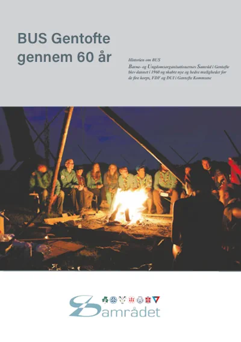

Børne og ungdomsorganisationernes Samråd i Gentofte
I Gentofte Kommune er vi 10 grupper fra Det Danske Spejderkorps, 4 KFUM-Spejder grupper, 2 Grønne Pigespejdere, 1 FDF kreds og 1 DUI Leg og virke alle repræsenteret i det lokale samråd også undertiden bliver vi også blot kaldt BUS Gentofte. Du kan finde alle foreningerne i Gentofte Fritidsportal
Du kan også besøge Børne- og Ungdomsorganisationernes Landssamråd
I 2024 fik Samrådet produceret en bog omkring dets arbejde fra stiftelsen i 1960 til i dag. Du kan her
hente og læse bogen om BUS Gentofte gennem 60 år 1960-2024.
